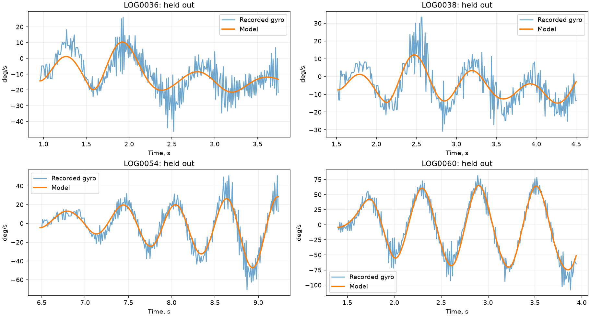
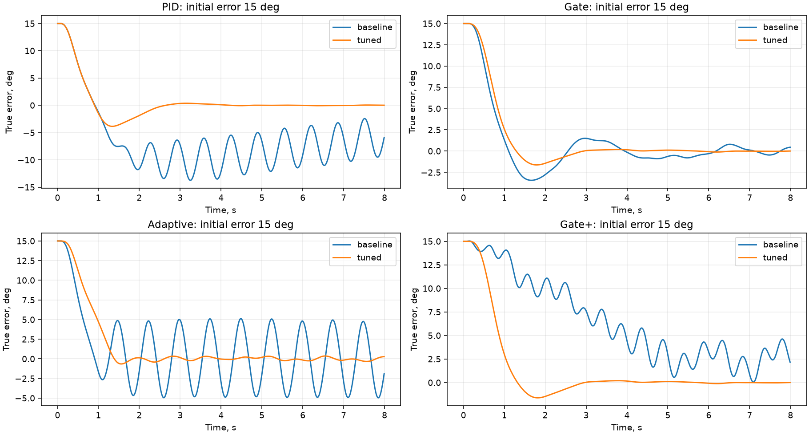

29.10.2026. Добавлен профиль 3 — СВП Roll в общий тракт всех четырёх регуляторов. Готовый запуск: Win32\Hovercraft\FModel.exe, настройки рядом в FModel.ini. Прежние профили и основной INI сохранены. Прошивка судна не изменена.
Просмотрены 57 EDF. В идентификацию вошли 39 возбуждённых автоматических участков: 19 нечётных записей для подгонки, 20 чётных для независимой проверки. Исключены LOG0001–0004 (старые rates/недостаточные данные), короткие участки, почти постоянный вход и LOG0019 с неподвижным гироскопом. Единое правило отсечения для каждого заезда: первые 0,10 с и последние 0,50 с активного регулятора. Это уменьшает влияние старта/контакта, но не гарантирует отсутствие всех возмущений. Полный список, интервалы и SHA256 — manifest.json.
Вход модели — (RES_RollRC−1500)/2,5, выход — Gyro X. Учтено, что команда и физическая скорость имеют разный масштаб. Модель второго порядка: статическое усиление 0,4853 °/с на единицу выхода, собственная частота 1,484 Гц, демпфирование 0,315, чистая задержка 0,060 с. При постоянном выходе 40 установившаяся скорость модели около 19,4°/с. Кубическая нелинейность и мёртвая зона в выбранном варианте не потребовались; это не доказательство полной линейности судна.
Воспроизведение непосредственно Delphi-моделью: медиана R² по 20 независимым записям 0,482, медиана RMSE 7,84°/с. На выраженных поворотах LOG0052–0062 согласование лучше, чем на малых воздействиях. Полные ошибки, включая плохие результаты, сохранены в delphi_replay.csv. Общая модель приближённая, её нельзя считать цифровой копией всех заездов.

Камера всегда жёстко закреплена. Её монтажная ось может не совпадать с осью судна. По уточнению пользователя поворот влево на 7° компенсирован ShiftZRoll=−7; поэтому основной профиль использует остаточное смещение CameraBias=0. Нескомпенсированный монтаж задаётся постоянным CameraBias, не перемещением камеры во время расчёта. Старую трактовку LOG0034–0037 как подвижной камеры следует считать исправленной.
Поток камеры принят 50 Гц (типичный интервал пакетов в записях 20 мс). Физическая задержка камеры 40 мс, шум угла 0,10° и эффективное высокочастотное возмущение гироскопа 5°/с — явно заданные модельные допущения, проверяемые с вариациями, а не отдельно измеренные характеристики датчиков. NoiseScale масштабирует оба возмущения. Постоянная времени изменения курса 0,4 с и скорость 5,4 км/ч — также допущения геометрического примера. По этим данным надёжно идентифицируется угловая динамика Roll; поступательная скорость, боковое скольжение и Pitch не идентифицированы.
Поиск выполняет скомпилированный Delphi-код реальных регуляторов. По 500 кандидатов на алгоритм, фиксированное зерно. Критерий учитывает интеграл абсолютной ошибки, остаточную ошибку, превышение начального отклонения, насыщение и резкость команд. Общий физический предел OutputLimit=40 (RC 1400–1600). Задание Gate также ограничено 40. Нельзя считать общий предел скоростью судна.
Обучающие сценарии: начальные ошибки +5°, +15°, −30°, синусоидальная линия визирования; номинальная и изменённая динамика. Независимая проверка: новые зерна, длительность 8 с, дополнительные реверсы/движение цели, более слабый привод, задержка камеры до 60 мс и шум ×2. Отдельно проверены постоянные монтажные ошибки +7° и −2°. Всего 640 проверочных прогонов (80 на набор × исходный/найденный × 4 алгоритма).
| Алгоритм | RMS за весь опыт, ° | RMS последних 1,5 с, ° | Время на пределе |
|---|---|---|---|
| PID | 11.45 → 3.62 | 12.57 → 0.92 | 61.6% → 8.5% |
| Gate | 4.72 → 3.88 | 1.86 → 0.98 | 8.1% → 1.8% |
| Adaptive | 5.25 → 4.23 | 4.18 → 1.32 | 84.5% → 0.0% |
| Gate+ | 6.97 → 3.98 | 4.17 → 0.99 | 55.9% → 1.7% |
В таблице средние по 48 проверкам на набор без дополнительного монтажного смещения, включая движущиеся задания. Исходный PID — 12/20/3 из записи, Gate — N=3, KLambda=3, Kp=0,35, Ki=3; Adaptive/Gate+ — исходные параметры проекта. Монтажные смещения вынесены в отдельные строки validation.csv: угловое наведение само по себе не гарантирует обнаружение неизвестного монтажного смещения.

Это лучшие найденные наборы для указанного критерия и модели, не доказанный глобальный оптимум. RateKp Gate и FilterTime оказались на нижней границе поиска: результат чувствителен к модели задержки/шума и не должен автоматически переноситься на судно. Поиск не определяет достоверные настройки терминального режима Gate+ или оценивания реального бокового скольжения: для них нет достаточной наблюдаемости.
Через штатный TForm2 выполнены 27 сценариев для всех четырёх моделей: скорости 3,6/5,4/7,2 км/ч, исходные курсы −10/0/+10°, инерция курса 0,2/0,5/0,8 с, цель (8,1) м. Максимальные минимальные расстояния: PID 0,021 м, Gate 0,054 м, Adaptive 0,244 м, Gate+ 0,058 м. Это результаты идеализированной геометрии, не прогноз сантиметровой точности реального прохождения ворот. Полные строки — geometry.csv.
Прошли 12 существующих консольных наборов FModel, проверка задержки/установившегося усиления/общего предела нового профиля, воспроизведение всех выбранных EDF, интеграция профиля во все четыре модели. Собраны FModel.exe, HovercraftTuning.exe и HovercraftValidation.exe. Для PID/Adaptive наблюдение камеры теперь явно вычисляется перед чтением гироскопа, чтобы порядок вычисления аргументов Delphi не подменял текущий шумный отсчёт предыдущим.
Открыть Win32\Hovercraft\FModel.exe, нажать «Инит», затем «Старт». Во вкладке профиля выбран 3, общий предел 40. Менять CameraBias для проверки остаточной ошибки монтажа, CourseTime для предположений о сносе. Коэффициенты четырёх регуляторов находятся в соответствующих вкладках.
tools/fit_hovercraft_profile.py <папка EDF> --output <новая папка> выполняет идентификацию (NumPy); tools/test_hovercraft.ps1 собирает и повторяет проверки, с -Tune повторяет поиск. fit.json, manifest.json, combined.ini, validation.csv и delphi_replay.csv сохраняют данные и условия расчёта. Прежняя прошивочная внешняя P-ветка при |ошибке|≥40° не входит в оптимизируемый регулятор: отдельная проблема её скачка ограничения остаётся в RoketPas.